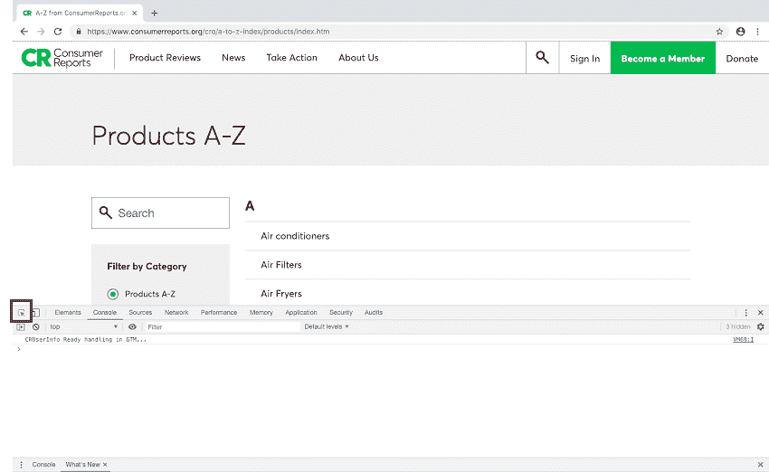
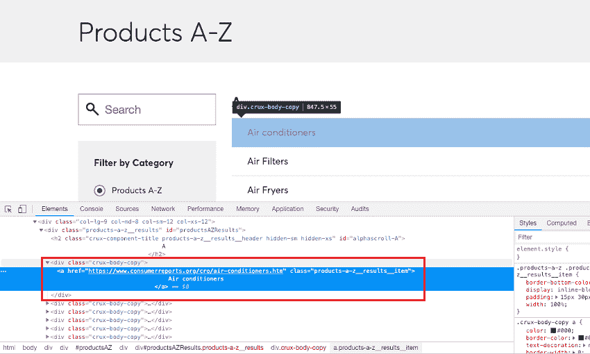

从消费者报告网站抓取产品名称
原文：https://www.studytonight.com/python/web-scraping/web-scraping-practical-example-1
注:本教程仅用于教育目的，我们要求读者不要使用该代码对网站进行任何形式的伤害。
在本教程中，我们将学习如何从任何网站上抓取数据。我们从中获取数据的网站是消费者报告网站。我们将从这个网址请求数据，然后从中收集产品名称列表。
让刮擦开始...
## importing bs4, requests and fake_useragent modules
import bs4
import requests
from fake_useragent import UserAgent
## initializing the UserAgent object
user_agent = UserAgent()
url = "https://www.consumerreports.org/cro/a-to-z-index/products/index.htm"
## getting the reponse from the page using get method of requests module
page = requests.get(url, headers={"user-agent": user_agent.chrome})
## storing the content of the page in a variable
html = page.content
到了这一步，我们已经在变量html中存储了网页的完整源代码。现在让我们创建一个漂亮的输出对象。你甚至可以尝试运行prettify方法。
## creating BeautifulSoup object
soup = bs4.BeautifulSoup(html, "html.parser")
我们还创建了一个美丽的组对象，现在呢？我们如何知道从 HTML 代码中找到并提取哪个标签。我们应该在 HTML 代码中搜索它吗？不可能！
还记得在本系列的第一个教程中，当我们引入术语网页抓取时，我们确实与您分享了一种技术，在这里我们可以使用 Chrome 浏览器的开发工具来查找任何网页元素的 HTML 代码。(其他浏览器如火狐等也有自己的开发工具，也可以使用。)
如果您使用的是 Windows，请按 F12 键打开开发者工具(在 chrome 浏览器中)，如果您是 Mac 用户，请按选项+命令+ I 键。
点击左上角按钮:

然后将鼠标光标悬停在产品列表条目上以查找它们的 HTML 标记:

我们可以看到，锚点标签包含产品报告页面的网址和产品名称，并包含在一个带有class属性值的div标签中。这就是我们开始的地方，我们将获取所有div标签，其class属性值等于症结-身体-副本:
## div tags with crux-body-copy class
div_class = "crux-body-copy"
## getting all the divs with class 'crux-body-copy'
div_tags = soup.find_all("div", class_="div_class")
## we will see all the div tags
## enclosing the anchor tags with the required info
for tag in div_tags:
print(tag)
空调.........
由于上述代码的完整输出太长，我们将其存储在文件中(下载文件查看)。
现在下一步是从附带的div标签中提取产品名称和各个产品网页的链接。
## extracting the names and links from the div tags
for tag in div_tags:
name = tag.a.text.strip()
link = tag.a['href']
print("{} ---- {}".format(name, link))
空调-https://www.consumerreports.org/cro/air-conditioners.htm 空气过滤器-https://www.consumerreports.org/cro/air-filters.htm 空气油炸锅-https://www.consumerreports.org/cro/air-fryers.htm 空气床垫-https://www.consumerreports.org/cro/air-mattresses.htm.........
看，多简单。有了这个，我们成功地从一个网站上收集了数据。
以下是完整的代码供您参考:
## importing bs4, requests and fake_useragent modules
import bs4
import requests
from fake_useragent import UserAgent
## initializing the UserAgent object
user_agent = UserAgent()
url = "https://www.consumerreports.org/cro/a-to-z-index/products/index.htm"
## getting the reponse from the page using get method of requests module
page = requests.get(url, headers={"user-agent": user_agent.chrome})
## storing the content of the page in a variable
html = page.content
## creating BeautifulSoup object
soup = bs4.BeautifulSoup(html, "html.parser")
## div tags with crux-body-copy class
div_class = "crux-body-copy"
## getting all the divs with class 'crux-body-copy'
div_tags = soup.find_all("div", class_="div_class")
## extracting the names and links from the div tags
for tag in div_tags:
name = tag.a.text.strip()
link = tag.a['href']
print("{} ---- {}".format(name, link))
试着在你的机器上运行这段代码，如果你遇到任何问题，你可以在这里发布你的问题: StudyTonight Q & A 论坛